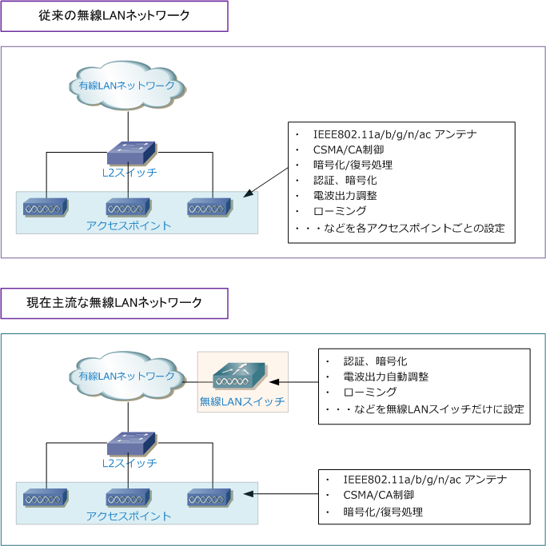
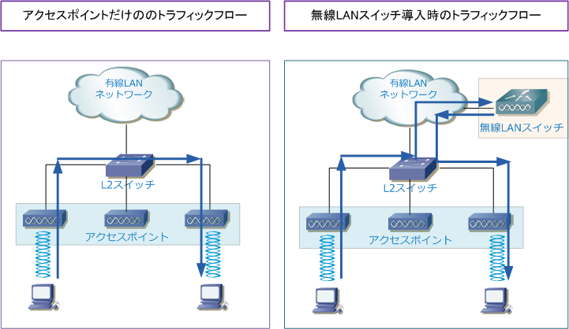

Wireless LAN Switch
無線LANスイッチ
無線LANスイッチとは複数のアクセスポイントを集中管理、集中制御する機器のこと。無線LANスイッチは APが行っている「認証、暗号化、電波出力調整、ローミング」などのほとんどの機能を担うことになるので 無線LANスイッチを導入した場合、アクセスポイントはただのアンテナのような存在になります。実際にAP に行っていたすべての設定を無線LANスイッチに設定することから、AP側で設定する内容は自身のホスト名、 IPアドレス関連、自身が管理されることになる無線LANスイッチのIPアドレスの指定の設定だけになります。

従来のネットワークインフラでは、無線LANのセキュリティ問題や速度問題などが解決されていなかったため 大規模に無線LANシステムが導入されることがあまりなく、10台以下のAPを導入するケースが多かったので 無線LANスイッチの需要はそれほどありませんでしたが、IEEE802.11i や IEEE802.11n が規格化された現在 大規模に無線LANを導入するケースが多くなり、無線LANスイッチを導入するケースが多くなってきています。
いわゆる無線LANスイッチには厳密には「無線LANスイッチ」と「無線LANコントローラ」という2つの用語があり意味が異なります。 しかし多くのエンジニアは正確には無線LANスイッチとしての位置づけとなる機器のことを「無線LANコントローラ」と呼んでいます。 これはCisco製品の無線LANスイッチがCisco WLC（Wireless LAN Controller）という名称である事が大きく影響していると思います。
無線LANスイッチ導入時のトラフィックフロー
無線LANスイッチを導入している場合、無線LANクライアント同士のトラフィックフローは無線LANスイッチを 介して通信が行われるようになります。※ Cisco機器で FlexConnect の実装をした場合、フローが異なります。 メーカの機器仕様によりますが、無線LANスイッチに障害が発生した場合はアクセスポイントは制御を失うこと になるので無線LAN通信ができなくなります。従って、無線LANスイッチは冗長化して導入するのが一般的です。
